Design and Spatial Analysis of On-Farm Strip Trials
From Principles to Simulation Evaluations
CCDM & EECMS, Curtin University
02/12/2025
Fundamental attributes of an experiment
Replication
Blocks
Randomisation
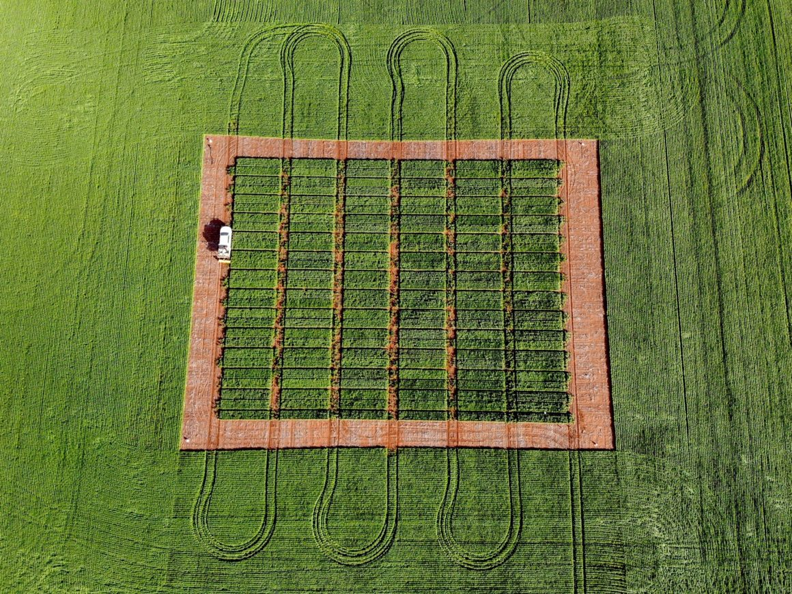 (https://www.livingfarm.com.au)
What is on-farm experimentation?
Traditional research limitations
Small-plot trials: Limited relevance to commercial-scale farming
Controlled conditions: Don’t reflect real-world variability
Long translation time: Years between research and practice
Geographic specificity: Results may not transfer across regions
Farmer engagement: Limited involvement in research design
The OFE solution
Commercial-scale validation: Testing at realistic field sizes
Real-world conditions: Incorporating natural variability and farmer practices
Rapid innovation cycles: Faster feedback and adaptation
Local relevance: Site-specific recommendations
Farmer-scientist collaboration: Co-creation of knowledge
Illustration of OFE trial designs
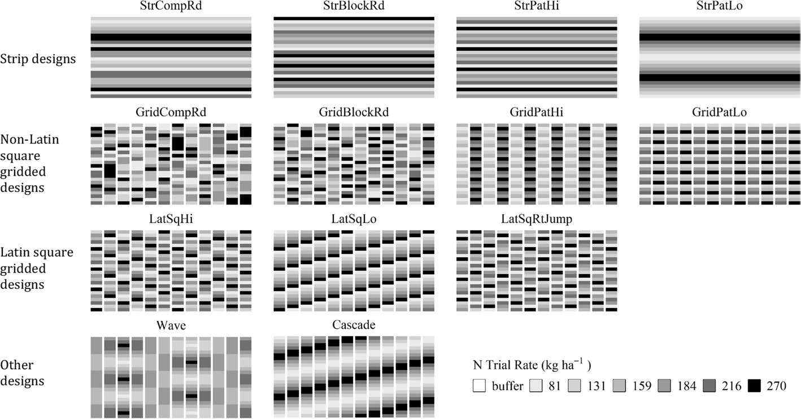Illustration of some OFE trial designs, including strip-based, grid-based, Latin square, and gradient layouts. These designs support different analytical goals, such as treatment comparison, spatial modelling, and rate-response analysis (Li, Mieno, and Bullock (2023))
Why our focus is on strip trials?
Strip trial advantages for OFE
- Commercial compatibility: Matches farming operation scale
- Machinery integration: Works with standard farm equipment
- Cost efficiency: Lower setup and management costs
- Farmer adoption: Easy to implement and understand
- Practical relevance: Direct application to farm operations
- Precision agriculture: Compatible with variable-rate technology
- Technology integration: Works with GPS and yield monitors
A typical long strip trial
Strip dimensions:
Width: 10-30m (machinery width dependent)
Length: 200m-1km (field size dependent)
Area: 0.2-1.5 ha per strip
Number: 2-6 treatments typical
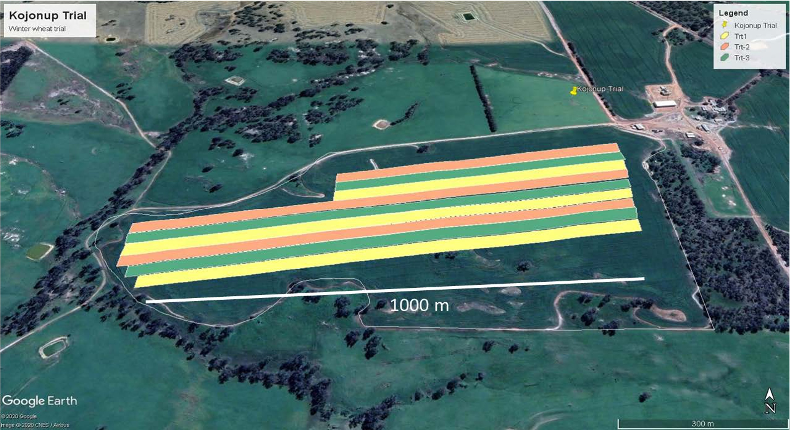
Do these principles still hold for OFE
Traditional paradigm
✓ Replication
✓ Blocks
✓ Randomisation
Clear, controlled, artificial
OFE reality
? Replication (fewer reps)
? Blocks (natural variation)
? Randomisation (farmer constraints)
Practical, realistic, messy
Challenge: How to achieve statistical validity under OFE constraints?
Do these principles still hold for OFE
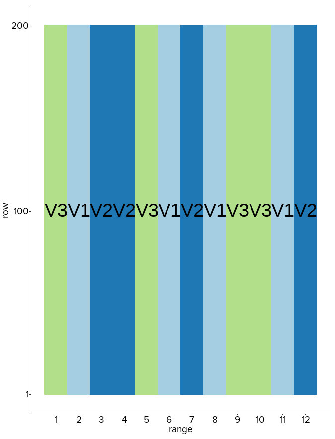

Previous studies on OFE design
For continuous responses, Prior research (Cao et al. 2022, 2024; Rakshit et al. 2020; Piepho et al. 2011; Pringle, Cook, and McBratney 2004) conclusively showed systematic designs outperform randomised designs for spatial analysis of continuous variables

Research focus
This study explores statistical strategies for the design and analysis of on-farm experiments (OFE), building on established foundations (Piepho et al. 2011; Pringle, Cook, and McBratney 2004) while advancing methodological innovation.
Do these design principles extend to categorical variables common in modern OFE?
Linear mixed model for OFE
Core concept: Linear Mixed Models treat large strip OFEs similar to Multi-Environment Trials (MET), where pseudo-environments (PE) represent different zones within the field (Stefanova et al. (2023)).
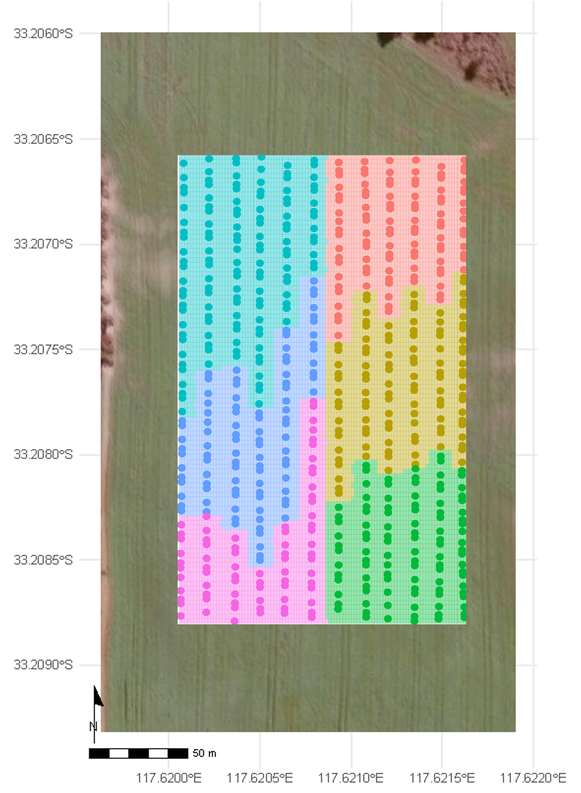
Linear mixed model for OFE
Suppose the entire field is partitioned into \(p\) PEs, and the \(j\)th PE consists of \(n_j\) grid points, such that the total number of grid points in the experiment is \(n=\sum_{j=1}^p n_j\). Let \({y}_j\) be the \(n_{j} \times 1\) vector of observed responses corresponding to the \(j\)th PE. The LMM for the combined vector of data \({Y} = \lbrack{y}^\top_{1}, \ldots, {y}^\top_{p}\rbrack^{\top}\) across all PEs is given by \[\begin{equation}\label{eq:modelmatrix} {Y} = {X}{\tau} + {Z}{u} + {e}, \end{equation}\] where \({\tau}\) and \({u}\) are \(t\times 1\) and \(b \times 1\) vectors of fixed and random effects, respectively. The matrices \({X}\) and \({Z}\) are \(n\times t\) and \(n\times b\) design matrices corresponding to the fixed and random effects, respectively. The \(n\times 1\) vector \({e}\) provides the combined residual effects from all PEs.
Typically, the random effect \({u} = \lbrack {u}^{\top}_{1}, \ldots, {u}^{\top}_{q}\rbrack^{\top}\) is composed of several model terms, with the corresponding design matrix \({Z}\) partitioned as \(\lbrack {Z}_1, \ldots,{Z}_q \rbrack\).
Linear mixed model for OFE
Why PEs matter:
Fields are not uniform - different zones behave differently
One-size-fits-all recommendations often fail
Zone-specific management improves overall performance
Practical implementation:
Clustering approach using elevation, soil, or other covariates
Systematic partitioning when covariates unavailable
3-6 zones typically optimal for most fields
Statistical modeling within each zone
Linear mixed model for OFE
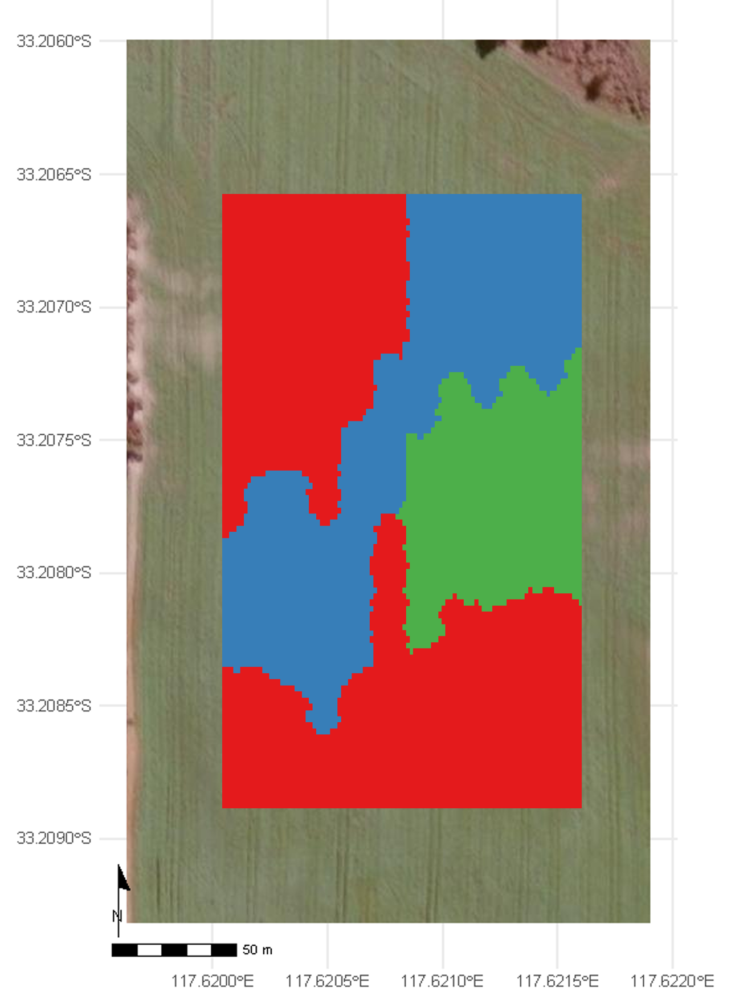
Interpretation
- The LMM identifies which treatment yields the highest predicted response in each PE.
- This enables zone-specific recommendations, supporting precision management.
- Spatial patterns reflect underlying field heterogeneity and treatment × environment interactions.
Simulation study - LMM
We simulate baseline yield using unconditional Gaussian geo-statistical simulation based on a first-order stationary random field model (Evans et al. (2020)). \[ z(s) = \mu + \varepsilon(s) \] where \(z(s)\) is the simulated yield at location \(s = (x, y)\), fertiliser trials are simulated using different designs and is added to the baseline yield: \[ y(s) = z(s) + \beta \times N(s) \]
Simulation study - LMM
Primary research question
How do trial length, number of replications, model structure (spatial vs non-spatial), data granularity (averaged vs full), and layout (strip vs stacked) affect the accuracy and statistical power of treatment effect estimation in OFE?
- Trial length: Short (100 m) to long (1100 m) strips/trials
- Replications: 2 to 12
- Model types: Non-spatial (M11, M21), spatial (M12, M22, M23)
- Data granularity: Averaged data (mean yield per strip/zone) vs full data (all yield points)
- Design layouts: Strip and stacked replicated trials
Stacked replicated design
This design is especially useful when:
Field length is limited, but replication is still required.
High-resolution spatial data is available, allowing for detailed modelling.
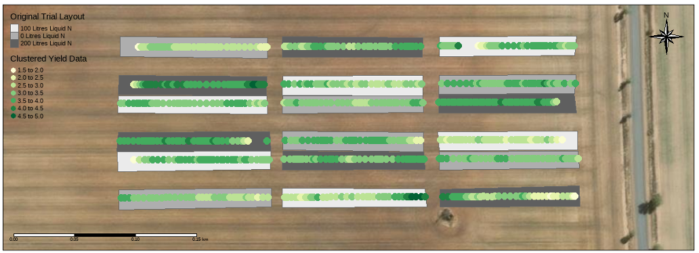
Simulation study - LMM
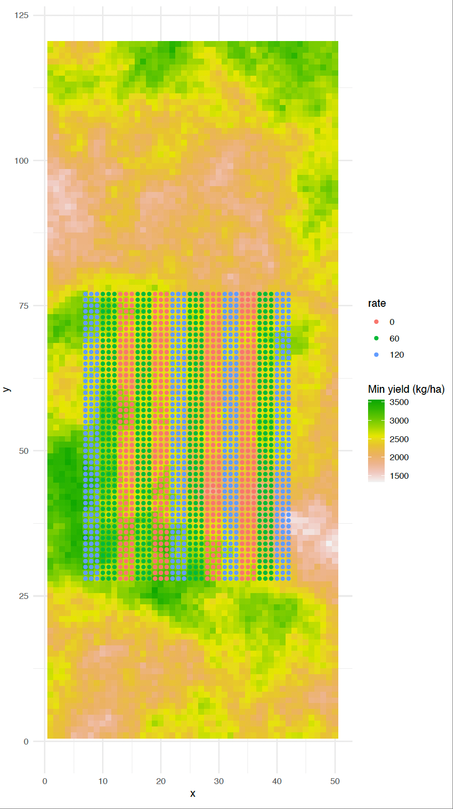
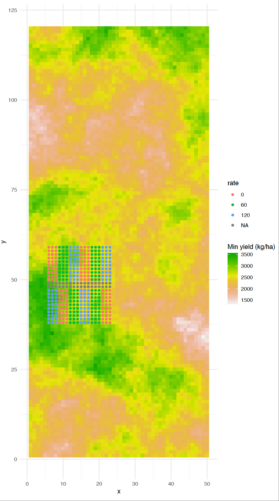

Result for strip trials
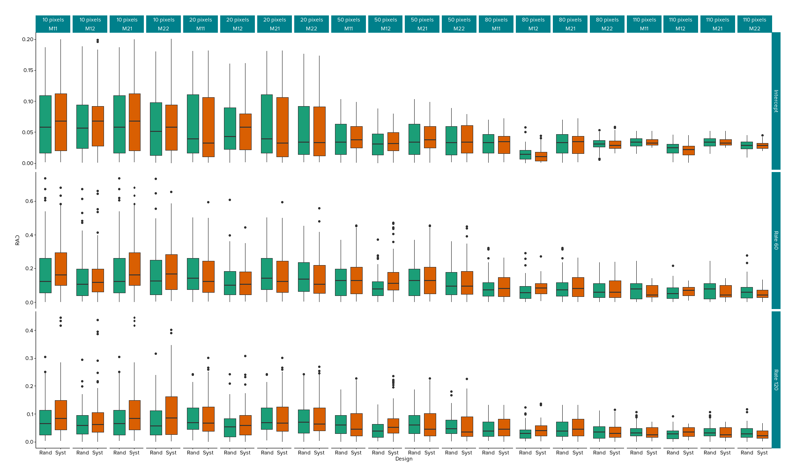Boxplots of relative absolute difference (RAD) across different trial lengths, models, and designs of coefficients of strip trials. Each panel represents a combination of trial length and model (M11–M22), with RAD values compared between randomised and systematic strip designs. Lower RAD values indicate more accurate treatment effect estimation. Randomised designs and models incorporating spatial terms (M12,M22) show improved performance.
Statistical powers of strip trials
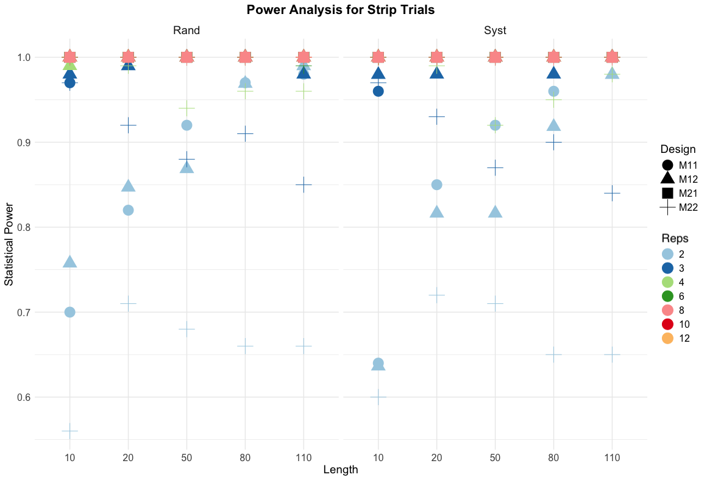
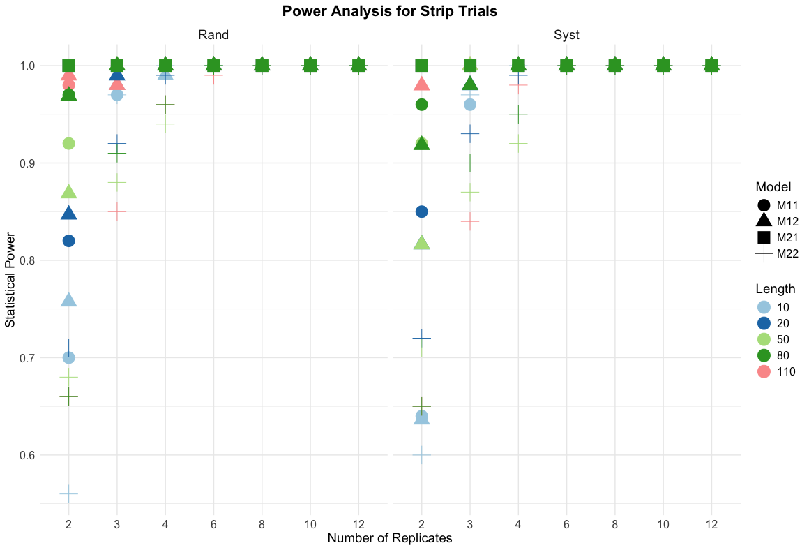
Key findings for strip trials
Critical Design Thresholds
Minimum 3 replications required for 95%+ power in most scenarios
Strip length matters: Longer strips (\(\ge\) 500m) show consistent power improvement
Spatial models (M12, M22) enhance power by 5-15% over non-spatial models
Full data analysis consistently outperforms averaged data approaches
Design-specific performance
Randomised designs: Superior power for hypothesis testing (0.85-1.0 typical)
Systematic designs: Adequate power (0.70-0.95) with operational advantages
Length effect: 1100m strips achieve 98%+ power with 2 reps vs 70% for 100m strips
Model selection: Spatial correlation models critical for realistic field conditions
Result for stacked trials
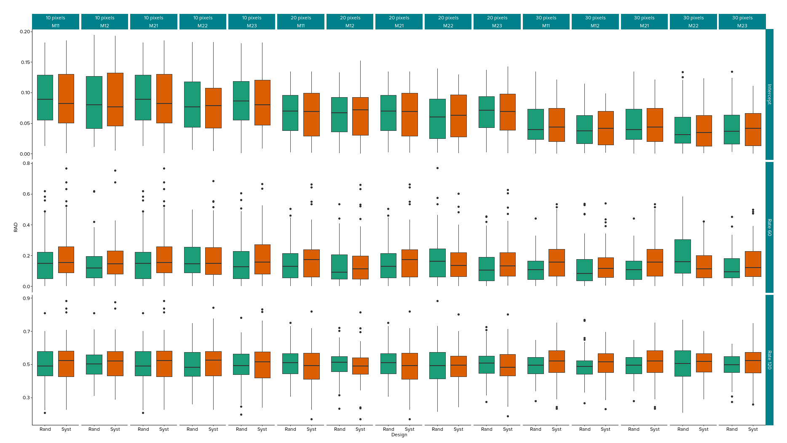Boxplots of relative absolute difference (RAD) for stacked replicate trials across different trial lengths and models. Each panel represents a combination of trial length and model (M11–M23), with RAD values compared between randomised and systematic designs. While randomised designs generally show slightly lower RAD values, the differences are less pronounced than in strip trials.
Statistical powers of stacked trials
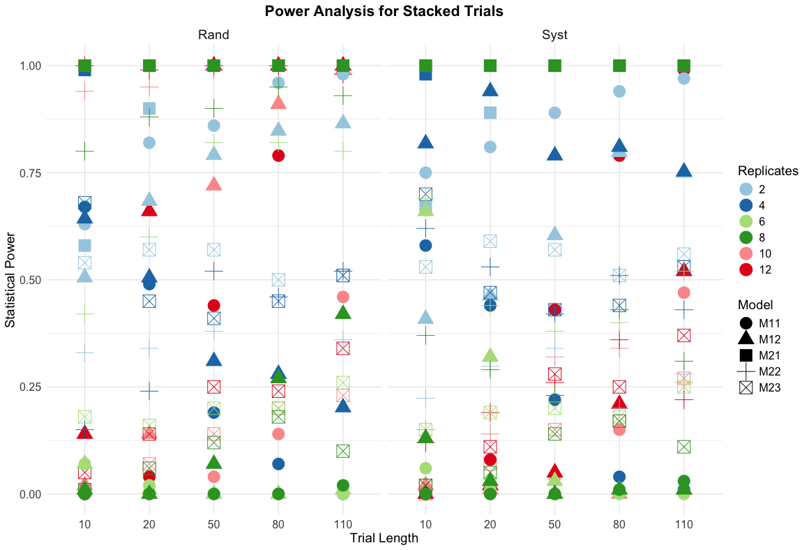Key findings for stacked trials
Critical performance patterns:
M21 (Full non-spatial): Consistently achieves 100% power across all scenarios
M23 models: Generally poor performance (0.1-0.7 power) - avoid in practice
Length sensitivity: Dramatic improvement from 10m (0.0-0.7) to 110m (0.25-1.0) trials
Replication effects: Optimal performance at 10-12 reps, diminishing returns beyond 6 reps
Model selection insights:
Averaged data models: Highly variable power (0.0-1.0) - unreliable for inference
Full data analysis: More consistent and higher power overall
Spatial vs non-spatial: Non-spatial models (M21) surprisingly outperform spatial models (M22, M23)
Design comparison: Randomised slightly better than systematic, but differences minimal
Practical recommendations: For stacked trials, prioritize M21 models with full data analysis and ensure adequate trial length (\(\ge\) 50m) for reliable statistical inference.
Data collection
Yield monitor technology
Combine harvesters: Real-time yield measurement
GPS integration: Precise location recording
Data logging: Continuous data capture at 1-second intervals
Quality sensors: Moisture, protein, oil content measurement
Auxiliary spatial data
NDVI or multispectral imagery for vegetation indices
Soil electrical conductivity from dual EM surveys
Gamma radiometric data for soil texture
Digital elevation models (DEM) for topographic variation
Weather station data for environmental context
Soil moisture sensors for irrigation management
Method selection framework
Objective-driven design: Select design strategy based on research goals and intended analytical approach
LMM for: categorical treatments & zone-based analysis
Categorical comparisons: Varieties, formulations, products
Hypothesis testing: Statistical significance of treatment effects
Zone-specific management: Different areas of the field
Treatment × environment interactions: How treatments perform across zones
GWR for continuous treatments & spatial optimisation
Continuous treatments: Varying nitrogen rates, seeding rates
Spatial optimisation: Site-specific management
Variable-rate applications: Precision agriculture implementation
Local response mapping: Understanding spatial variability
National standard and research impact
Adoption as standard operating procedures
- These guidelines form the basis for standard operating procedures (SOPs) for OFE trial design and analysis in Australia.
- Widely adopted by research organisations, grower groups, and industry partners as the benchmark for OFE methodology.
- Referenced in national projects and used to train researchers and practitioners.
- Collaborators and partners have implemented these standards in their OFE projects.
- Ensures consistency, scientific rigor, and practical relevance across diverse environments and research teams.
National standard and research impact
Our research outputs are not just academic—they set the national standard for on-farm experimentation, guiding the next generation of agricultural innovation in Australia. – Zhanglong Cao
Acknowledgements
This research and presentation were made possible through the support and collaboration of:
GRDC (Grains Research & Development Corporation)
Australian Grower Groups (Liebe Group, Facey Group, Grower Group Alliance, Consult Ag, Delta Agribusiness, Riverine Plains, Sygenta, Coterva, NSW DPI, DPIRD, DPI QLD and more)
Special thanks to all collaborating farmers, research staff, and postgraduate students for their contributions to on-farm experimentation and data collection.
Acknowledgements
Special thanks to EECMS, CBADA, C4AP & CCDM Curtin University

Thank you!
Reference

ASC2025 | Z. Cao et al.